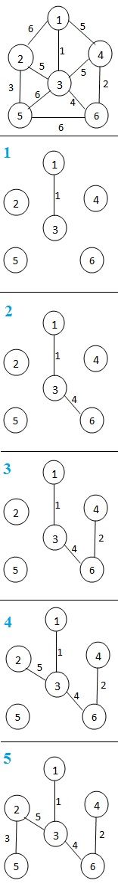

Prim's algorithm is a greedy algorithm that finds a minimum spanning tree for a connected weighted undirected graph.
It finds a subset of the edges that forms a tree that includes every vertex, where the total weight of all the edges in the tree is minimized.
This algorithm is directly based on the MST( minimum spanning tree) property.
The following are the main 3 steps of the Prim's Algorithm:
Consider the following example :
Start from the node 1 and then select the node with minimum distance.
Continue the procedure until all nodes are covered.
